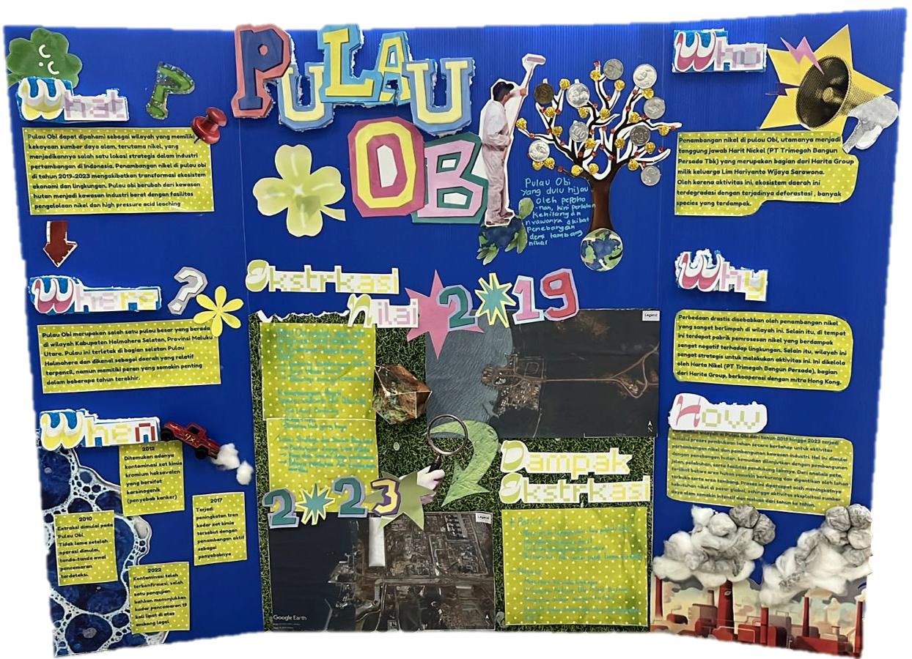

WHAT
WHERE
WHEN

WHO
WHY
HOW
The picture above shows our Biology and Geography interlink project: A board that explains a biogeographical phenomenon.
Specifically, the board above explains the 5W1H concepts regarding the Nickel Extraction in Obi Island.
This 'obi board' as I like to call it was made by my group, which consists of me, Ara, Justin, and Naira. They did an amazing Work at this very cool and epic board
| 5W1H Concept | : |
|---|---|
| What | Pulau Obi is rich in natural resources, especially nickel, making it a key mining area. Nickel mining has transformed it from forest land into a heavy industrial zone. |
| Where | Pulau Obi is a large island in South Halmahera, North Maluku, Indonesia, located south of Halmahera. It is remote but increasingly important. |
| When | 2010: Extraction began on Pulau Obi. Shortly after operations started, early signs of pollution were detected. |
| 2012: Hexavalent chromium contamination was discovered, a carcinogenic substance (causes cancer). | |
| 2017: There was an increase in chemical contamination levels, caused by active mining activities. | |
| 2022: Contamination was confirmed. One test even showed pollution levels 19 times above the legal limit. | |
| Who | Nickel mining on Pulau Obi is mainly managed by Harita Nickel (PT Trimegah Bangun Persada), part of the Harita Group. The activity has caused deforestation and impacted many species. |
| Why | The major changes are driven by abundant nickel resources and the presence of processing plants. Its strategic location also supports large-scale mining operations. |
| How | From 2019 to 2023, Pulau Obi experienced major land changes due to gradual clearing for nickel mining and industrial development. Forests were cut down, followed by the construction of roads, ports, and other facilities. Map analysis shows forests decreasing and being replaced by open land and mining areas. This process has accelerated due to rising global demand for nickel, making resource exploitation more intensive each year. |
